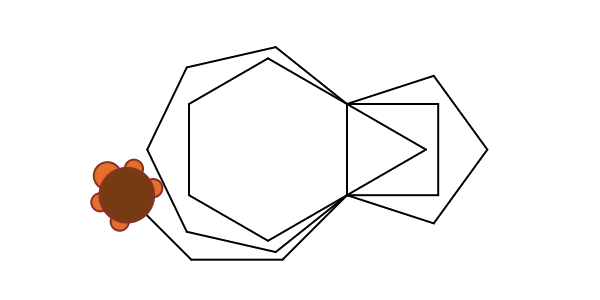

R for Psychological Science
Hi there!
I set this up as an introductory resource for psychology students taking my now-defunct Programming with R class at UNSW. There are two goals with this resource. The first is to provide an introduction to R programming that doesn’t assume any previous experience. The second is to provide a brief sketch of some of things that R can be useful for in psychology. Data analysis inevitably forms a large part of this, but I hope to cover a broader range of topics.
The content borrows from my introductory statistics lecture notes (Learning Statistics with R), but they’re not equivalent, and over time the two are likely to part ways. I wrote Learning Statistics with R to accompany an introductory statistics class and the intended audience for that book is a psychology student taking their first research methods class. This resource is a little different – it’s aimed at someone who has taken at least one research methods class and would like to learn how to use the R programming language in their own work.
I hope it is useful!
– Danielle

Everything from here onwards is very much a work in progress!
- Prelude to data
- Data types
- Describing data
- Visualising data
- Manipulating data (draft)
- Working with text (draft)
- Import and export (stub)
- Probability distributions (draft)
- Introductory statistics (draft)
- Intermediate statistics (stub)
- Advanced statistics (stub)
- Behavioural experiments (draft)
- Shiny web applications (draft)
- Web scraping (draft)
- Miscellaneous (draft)
- Image processing in R (to be added)
- Authoring documents in R (to be added)
- Backpropagation networks (draft)
- More computational modelling (to be added)
- Writing an R package (to be added)
- Week 1 slides: pptx, pdf
- Week 2 workbook: here
- Week 3 slides: here
- Data sets are here
- Github repository is here
- A nice resource put together by the UNSW folks in BEES.
Some extra links re data:
- the AFL data is here
- the orientation data is here
- the reasoning data is here, and in wide form here
- the titanic data is here courtesy here
Alternatively use R data sets:
data(diamonds): prices of 50,000 round cut diamonds (type?diamonds)data(iris): information about different kinds of flowers (?iris)data(mtcars): fuel efficiency of old cars (?mtcars)data(midwest): population information in the US…data(starwars): characters from star wars…- etc
Some documentation for the original data sets here.
The AFL data consists of single CSV file that contains information about every game played in the Australian Football League from 1987 to 2010. In total there are X cases (games) and Y variables recorded. The variables recorded are:
home_team: the name of the home teamaway_team: the name of the away teamhome_score: number of points scored by the home teamaway_score: number of points scored by the away teamyear: year in which the game was playedround: season week number in which the game was playedweekday: day of the week in which the game was playedday: day of the month in which the game was playedmonth: month of the year in which the game was playedgame_type: was this aregulargame or part of thefinalsseries?venue: the name of the stadium hosting the gameattendance: official attendance at the game
The users data os a single CSV file containing 148 days of web traffic data for my now-defunct lab website, collected via Google Analytics. I will likely extend this at a later date, but at the moment it includes only two fields:
Date: the date for which the statisics are reportedUsers: the number of unique users accessing the site
The frames data contains data from Experiment 2 of Hayes et al (under review). It contains the following variables:
idgenderageconditionsample_sizen_obstest_itemresponse